开发环境安装与第一次编译运行
Info
本文档参考了 ZhouTimeMachine 在 2023 年为程算课程准备的资料。
本节要完成两件事：
- 在自己的电脑上准备好可以编写、编译和运行 C 程序的开发环境；
- 成功编译并运行第一个 C 程序。
课程不限制你使用哪一种开发环境。只要能可靠地处理 .c 文件、编译标准 C 程序并方便你完成作业即可。你可以用包括但不限于
- Dev-C++
- Xcode
- Visual Studio Code
- CodeBlocks
- ...
选择其中之一即可。对初学者，用 MS Windows 系统同学可以先使用 Dev-C++；用 Mac OS 同学可以使用 Xcode。用 Linux 系统的同学显然不需要指导。也推荐大家尝试搭建 VS Code。后文会提供搭建这些环境的具体操作。
Warning
我们这门课程使用的软件都是免费的，如果遇到安装付费或者使用付费的情况，一定是下载错了。
先认识三个概念：
- 编辑器 (editor) 用来编写代码。VS Code 就是编辑器；安装 VS Code 并不等于安装了 C 编译器。
- 编译器 (compiler) 把
.c源代码转换为计算机可以执行的程序，如 GCC 和 Clang。 - 集成开发环境（IDE） 把编辑、编译、运行和调试等功能放在同一个软件中。Dev-C++ 和 Xcode 都属于 IDE。
Note
一段 C 程序通常会经过预处理、编译、汇编和链接，最终生成可执行文件。我们把这一整套过程简称为“编译”即可。 有一本书叫 《程序员的自我修养——链接、装载与库》，关于链接和装载等系统软件知识，可以去读这本书。
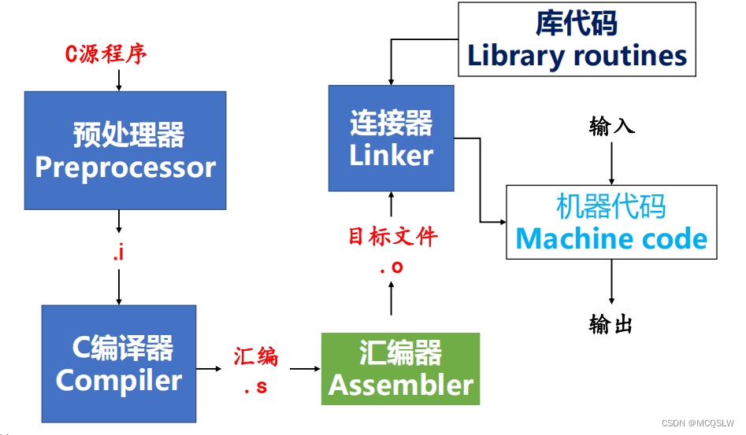
准备第一个程序
下面的程序就是经典的 Hello World，其运行效果是在终端输出 Hello World。
可以用这段代码来检验环境是否成功配置。不过请注意：
+ 在本地，文件名应为 hello.c，后缀是 .c，不是 .cpp 或别的东西；
+ 代码中的括号、引号和分号都应使用英文符号（半角）；
+ 在本地，编译前先 Ctrl+S 保存文件；
+ 在本地，应该把代码放在纯英文、没有空格的路径中，能避开许多工具的路径兼容问题。
在线 IDE
在线 IDE 适用于非计算机专业同学。配好环境的同学也可以看一看，因为你可能偶尔临时用到一个没有配置环境的电脑，这时使用在线 IDE 最为便捷。当然，在线 IDE 功能有限，无法代替一个本地 IDE。
步骤如下：
- 打开这个网址：
。 - 它已经为你写好 C 语言的 Hello World 程序源码。
- 在右上角选择 C 语言，然后点击左上角的 Run。
- 在下方，你就可以看见程序的输出。
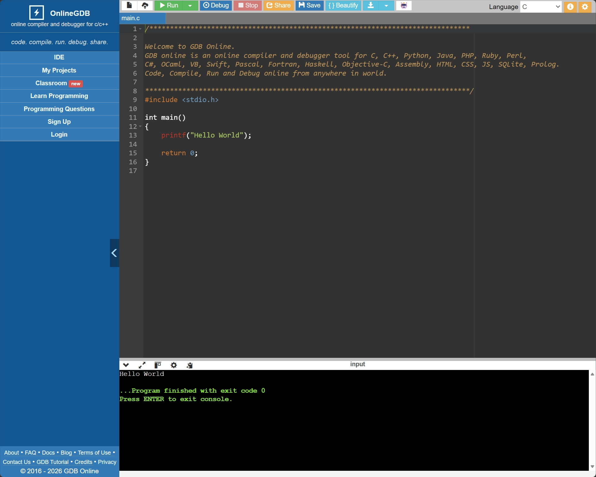
按下 Enter 键离开终端。下方会显示几个选项：
- Command Line Arguments：命令行参数
- Standard Input：标准输入。你可以选择 Interactive Console（就是正常地用键盘和程序交互）或者 Text（预先准备一些文本自动输入，通常用于测试 PTA 的样例数据
） 。
Dev-C++
Dev-C++ 是一个开箱即用的 IDE，适合希望先完成第一次编译运行的初学者（下载安装时请选择包含 TDM-GCC 编译器的版本，即 Embarcadero_Dev-Cpp_6.3_TDM-GCC_9.2_Setup.exe
安装完成后：
- 打开 Dev-C++，选择 文件（File）→ 新建（New）→ 源代码（Source File）；
- 写入上面的 Hello World 程序；
- 按
Ctrl+S，将文件保存为hello.c；——注意保存时后缀名一定要选.c！ - 选择 运行（Execute）→ 编译并运行（Compile & Run）；
- 如果出现一个黑色窗口并显示
Hello, world!，就说明你配置完成了。
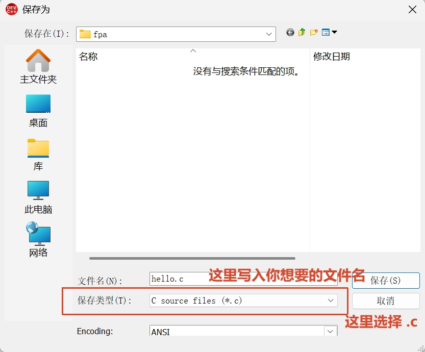
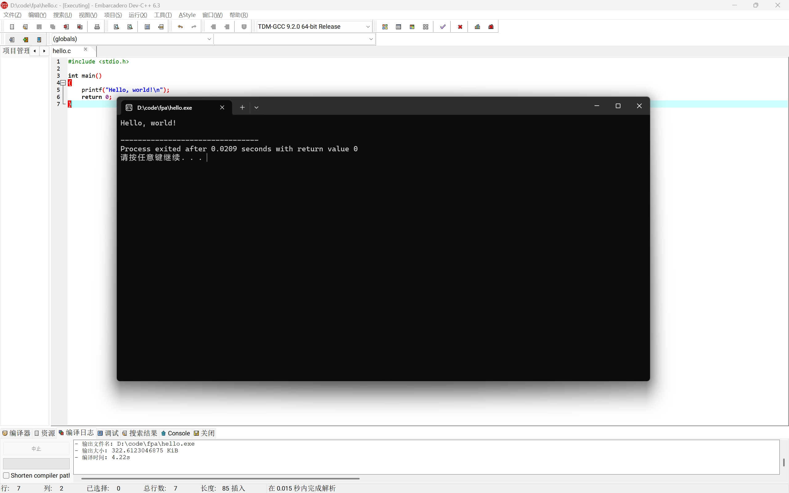
Note
蓝色图标的（旧版）Dev-C++ 由独立开发者 Orwelldevcpp 开发（现已停止
是原版 Dev-C++ 的继承和发展。
Xcode
Xcode  是 Apple 提供的开发环境，可以从 Mac App Store 安装。它的安装包较大，请预留下载和安装时间。
是 Apple 提供的开发环境，可以从 Mac App Store 安装。它的安装包较大，请预留下载和安装时间。
安装完成后：
- 打开 Xcode，选择 Create New Project；
- 选择 macOS → Command Line Tool；
Product Name可以填写hello，Language选择 C；- 创建项目后，用上面的 Hello World 程序替换
main.c中的内容； - 点击左上角的运行按钮，或按
Command+R； - 如果控制台中出现
Hello, world!，环境就可以使用了。
Apple 官方关于创建 Xcode 项目的说明可以参考：https://developer.apple.com/documentation/xcode/creating-an-xcode-project-for-an-app
一个演示视频：https://www.bilibili.com/video/BV11gs6zNEni/
VS Code：推荐的通用方案
VS Code 跨平台、插件丰富，今后的课程和项目中也能继续使用，因此比较推荐同学们尝试。但是它本身只是编辑器，因此需要再安装 C/C++ 扩展和编译器。
Warning
请注意，Visual Studio Code  不是 Visual Studio
不是 Visual Studio 。不要弄混了，不要用后者。
。不要弄混了，不要用后者。
1. 安装 VS Code 和 C/C++ 扩展
从 VS Code 官网 下载对应系统的安装包。Windows 安装程序中建议勾选“添加到 PATH”和“将 Code 注册为受支持的文件类型的编辑器”。
打开 VS Code，点击左侧“扩展”图标 ，搜索并安装 Microsoft 发布的 C/C++ 扩展。这个扩展提供代码高亮、补全和调试支持，但它本身仍然不是编译器。
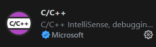
如有需要，还可以安装 Microsoft 发布的界面汉化插件 Chinese (Simplified) Language Pack。
安装汉化插件后可能需要你手动切换显示语言。Ctrl + Shift + P，出现的搜索框中输入 Configure，选择 Configure Display Language。
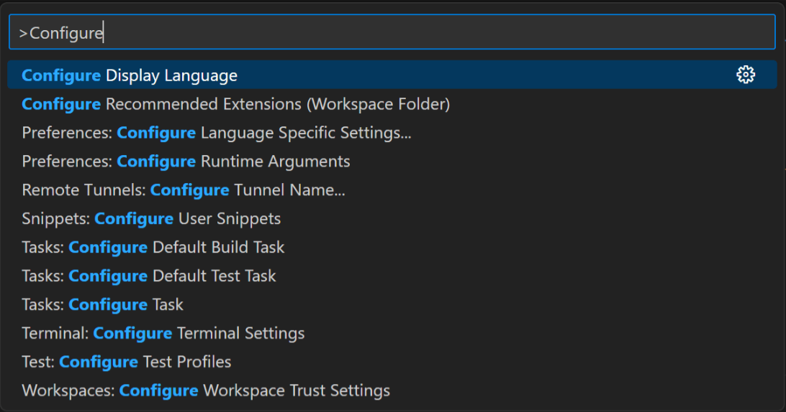
随后再选择“中文 ( 简体 )”就可以完成界面汉化了。
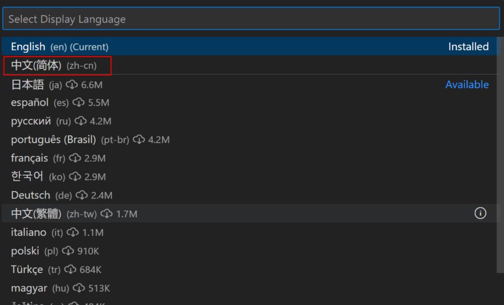
2. 安装编译器
Windows
在 Windows 平台上，我们可以使用 MinGW-w64 GCC。下面提供两种安装方法，任选一种即可，不要重复安装多套编译器。
MinGW-w64 不只是一个编译器，而是一套完整的工具集合。简单来说，它提供了在 Windows 上使用 GCC 所需的编译器、链接器、库和头文件等工具。
-
从 WinLibs 或其 GitHub 仓库 下载打包好的 GCC + MinGW-w64 工具链，
.zip或.7z压缩包均可。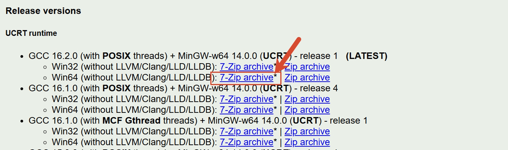
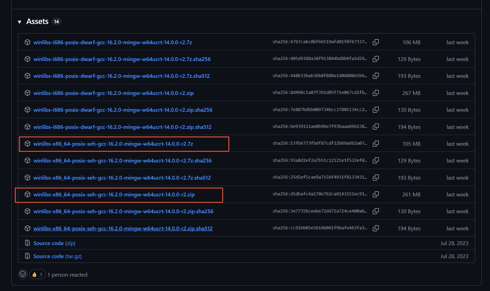
-
解压到固定的纯英文路径，路径中不要有空格，例如
C:\mingw64。不要在使用期间随意移动它。 - 确认该目录下存在
bin\gcc.exe，然后把bin文件夹的完整路径（例如C:\mingw64\bin）加入 Windows 的Path环境变量。 - 关闭并重新打开终端和 VS Code，让新的环境变量生效。
添加 Path 的方法：按 Win+R，输入 sysdm.cpl 并回车，依次打开“高级 → 环境变量”，在“用户变量”中的 Path 新增上述 bin 路径。不要删除 Path 中已有的其他项目。
从 TDM-GCC 选择 tdm64-gcc-10.3.0-2.exe 下载安装程序，然后选择 Create。
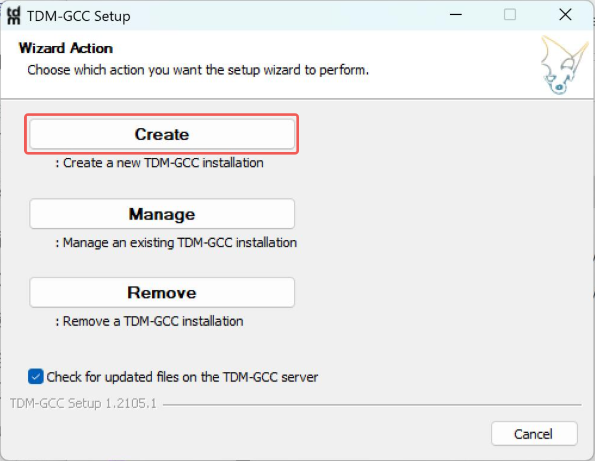
选择 64 位系统：
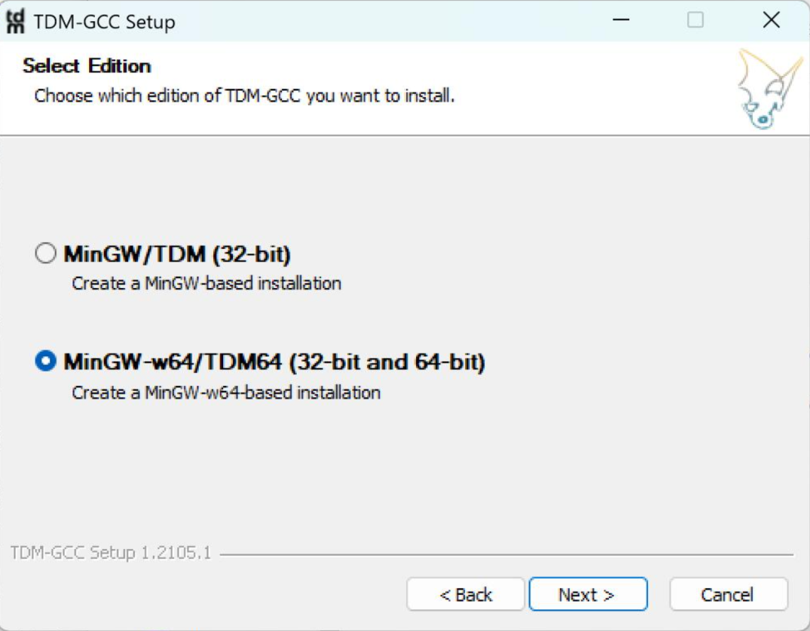
选择安装路径，推荐使用默认路径：
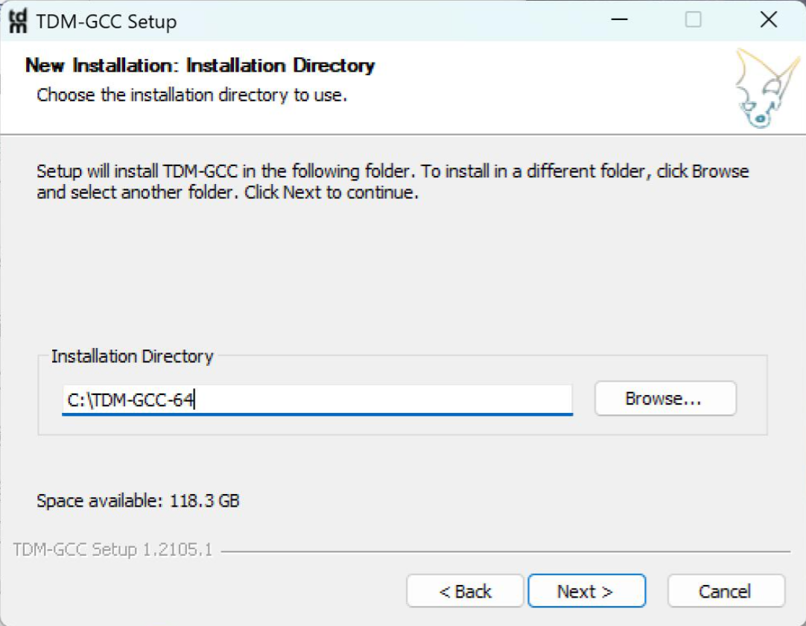
安装选项中注意勾选 Add to PATH：
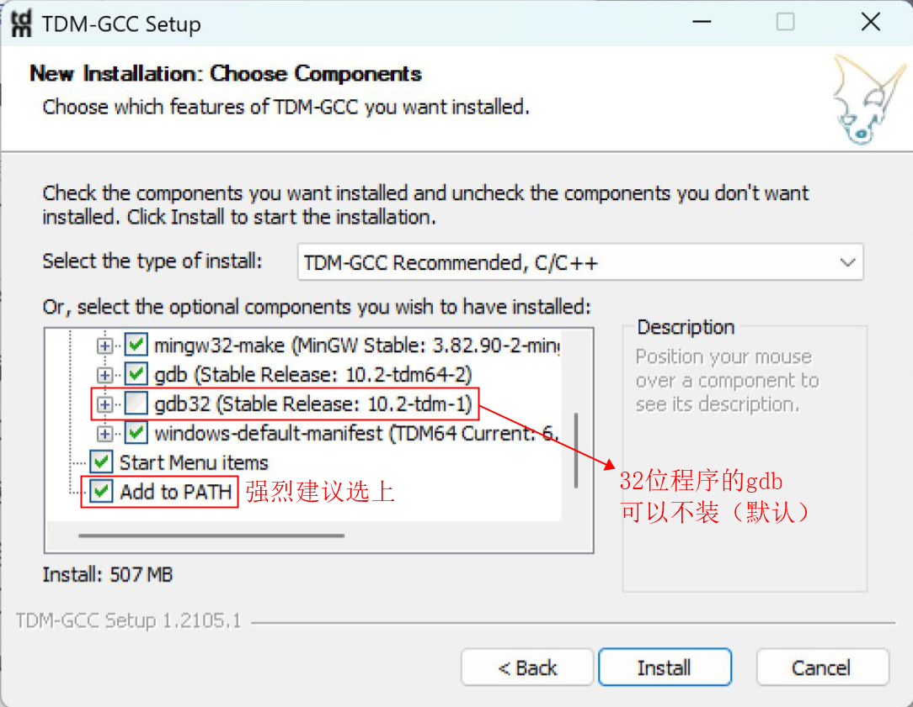
安装完成后，在一个新终端中执行：
能看到 GCC 的版本信息即表示编译器可用。
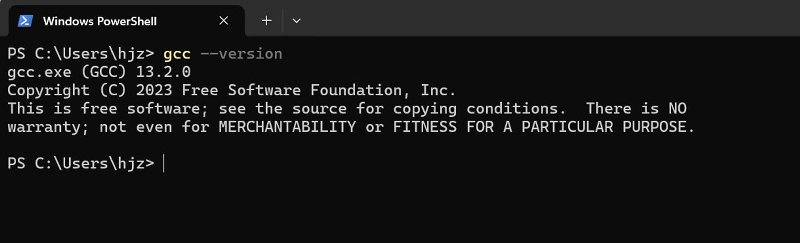
如果没有版本信息，可能是你还没有安装 gcc，或者你前一步 Add to PATH 没有正常进行，可能需要参照 Windows 修改环境变量进行环境变量的检查。
VS Code 官方还提供了 使用 MinGW-w64 和 GCC 的教程。
macOS
macOS 可以直接使用 Apple 提供的 Clang 编译器。可见 VS Code 官方教程。若已经安装 Xcode，一般无需重复安装命令行工具。
首先在“终端”中执行：
这条命令安装 Apple Command Line Tools，其次执行
3. VSCode 使用的一个简单示例
如下是 VS Code 的页面：
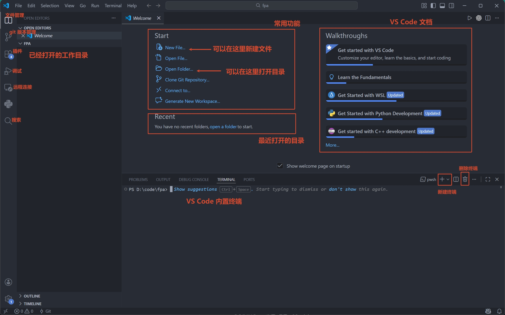
先创建一个专门存放代码的文件夹，例如 D:\code\fpa。然后打开 VS Code， VS Code 中选择 File → Open Folder，打开这个文件夹。
随后在左侧打开的工作目录区 右键 → New File 新建代码文件，输入文件名例如 hello.c，写入上面的 Hello World 程序并按 Ctrl+S（macOS 为 Command+S）保存。
Warning
左侧标签如果仍显示 Untitled-1，或者文件名旁有表示未保存的圆点，说明代码还没有正确保存。终端无法编译一个只存在于编辑器、尚未保存的文件。
一些同学写了代码后没有保存文件，文件名为 Untitled-1 或 #include <stdio.h>，如下图所示
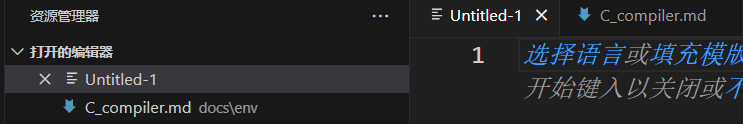
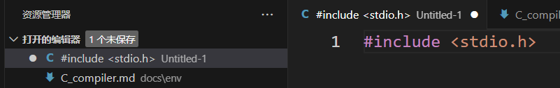
这些都属于没有保存的情况。
文件命名请使用全英文，最好能表达这个代码文件的功能，并且加上 .c 的后缀名。
在 VS Code 顶部选择 Terminal → New Terminal。如果你按上一小节打开了文件夹，新终端通常已经位于 hello.c 所在目录。
如果终端输出
就说明编辑器、编译器、工作目录和运行方式都已经配置正确。
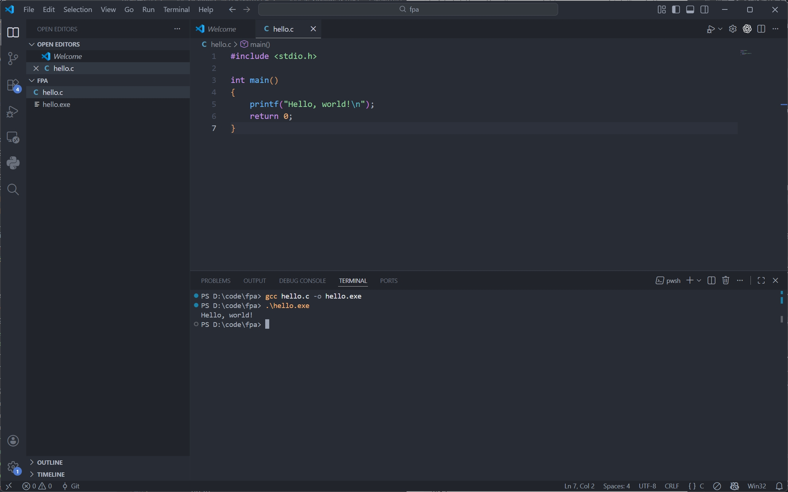
这里的 -o 用来指定输出文件名。如果省略它，GCC 通常会在 Windows 生成 a.exe，在 macOS 生成 a.out。
Note
还应区分：
gcc hello.c -o hello.exe是编译，成功时通常不会输出任何提示；.\hello.exe或./hello才是运行刚生成的程序。
常见问题
提示找不到 gcc 或 clang
- Windows 出现“无法将
gcc识别为命令”或“不是内部或外部命令”，通常是编译器没有安装好，或编译器的bin目录没有正确加入Path； - 修改
Path后必须关闭并重新打开终端和 VS Code；
这类错误发生在编译器启动之前，通常与 hello.c 中的代码无关。
提示找不到 hello.c
例如：
这表示终端当前所在目录中没有 hello.c。请检查：
- 文件是否已经保存，扩展名是否确实为
.c； - VS Code 是否打开了包含该文件的文件夹；
- 终端提示符显示的路径是否与左侧工作文件夹一致；
- 在终端执行
dir（Windows）或ls（macOS / Linux） ，能否看到hello.c。
编译成功，却没有看到输出
编译和运行是两步。输入 gcc hello.c -o hello.exe 后没有报错，只代表已经生成程序；还要输入 .\hello.exe 才会运行。macOS / Linux 对应执行 ./hello。
修改了代码，运行结果却没有变化
先保存源文件，再重新编译，最后重新运行。旧的可执行文件不会因为源代码发生变化而自动更新。
出现语法错误或链接错误
先定位输出中的第一条 error，并检查：
main、printf、#include <stdio.h>是否拼写正确；- 英文分号
;、引号"和括号是否完整； - 文件是否保存；
- 编译命令中的文件名是否与实际文件名完全一致；
- 当前工作目录、以及编译器安装路径是否是纯英文的，并且路径中不包含空格。
ld returned 1 exit status 或 linker command failed 往往只是最后的汇总信息，真正原因通常在它前面的报错中。